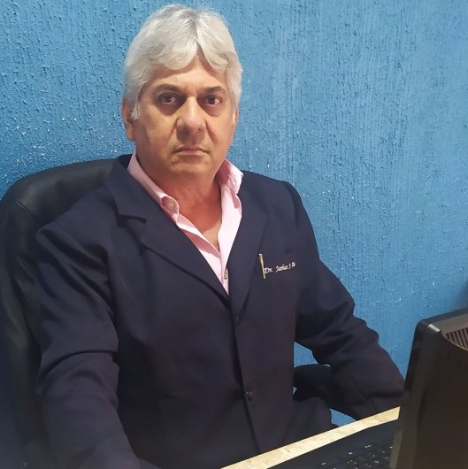

CRM-BA 7789 · RQE 2315 · TEGO 343/1997
Dr. Jarbas Santos Dultra
Ginecologia e obstetrícia no Itaigara, com consultório próprio desde 1996.
Formado pela UFBA em 1984, com residência no Hospital Roberto Santos e título de especialista em Ginecologia e Obstetrícia. Da consulta de rotina ao pré-natal e à menopausa, com hora marcada na sala 410 do Centro Empresarial Itaigara Sul ou por teleconsulta.
Por onde começar
O que trouxe você até aqui?
Escolha o assunto e leia com calma, no seu tempo. Cada página explica o que acontece na consulta e quando vale procurar o ginecologista. A indicação é individual, definida em consulta.
Preciso pôr os exames em dia
Consulta de rotina, preventivo, HPV e o cuidado com o colo do útero.
Ginecologia e prevençãoGestaçãoEstou grávida ou quero engravidar
Do planejamento às consultas e exames do pré-natal.
Pré-natalHormôniosMeu ciclo ou meu corpo mudou
Menopausa, ciclos irregulares, TPM e síndrome dos ovários policísticos.
MenopausaAssoalho pélvicoEstou perdendo urina
Incontinência, sensação de peso e o cuidado com o assoalho pélvico.
UroginecologiaCólicas muito fortes, sangramento aumentado ou dor na relação? Endometriose, miomas e dor pélvica
Caderno de currículo
De 1982 a 2026, linha por linha.
O Dr. Jarbas publicou na Doctoralia um currículo detalhado, com cada estágio, data e carga horária. Aqui ele está em ordem, com o registro público ao lado de cada linha.
- 1982Primeiros estágios
Estágio de obstetrícia na Maternidade Climério de Oliveira. Nos anos seguintes, urgências e obstetrícia em Camaçari, Hospital Getúlio Vargas, Hospital Santa Isabel, Hospital Santo Antônio e planejamento familiar no Hospital Prof. Edgar Santos.
Currículo na Doctoralia - 1983–841º lugar no concurso da Maternidade Tsylla Balbino
Interno de obstetrícia de novembro de 1983 a novembro de 1984: “aprovado em 1º lugar do concurso, com carga horária de 24 horas semanais, tendo obtido conceito ótimo”.
Currículo na Doctoralia - 1984Medicina pela UFBA
Formado pela Faculdade de Medicina da Bahia, da Universidade Federal da Bahia, em dezembro de 1984. No mesmo ano, estágio em ambulatório de cirurgia ginecológica no Hospital do Servidor Municipal de Salvador.
Currículo na Doctoralia - 1985–87Residência em Tocoginecologia
Residência médica no Hospital Roberto Santos, de 1º de março de 1985 a 28 de fevereiro de 1987.
Currículo na Doctoralia - 1992Título de especialista pelo CRM
Título de especialista em Ginecologia e Obstetrícia conferido pelo Conselho Regional de Medicina, nº BA-002.315, em 12 de agosto de 1992.
Currículo na Doctoralia · RQE 2315 - 1996Consultório próprio
Sócio-administrador, desde 12 de julho de 1996, da empresa do consultório que hoje funciona na sala 410 do Centro Empresarial Itaigara Sul.
Receita Federal - 1997TEGO 343/1997
Título de Especialista em Ginecologia e Obstetrícia conferido pela Associação Médica Brasileira e pela FEBRASGO em 20 de dezembro de 1997.
Currículo e certificado na Doctoralia - 2007–15Hospital Espanhol
Ginecologista e obstetra do Hospital Espanhol de julho de 2007 a abril de 2015.
CNES · histórico - 2026No consultório, 303 opiniões
Ginecologista e obstetra do consultório no CNES desde 2007, sem interrupção, e 303 opiniões com média 5 na Doctoralia.
CNES · Doctoralia
O que as pacientes mais citam
Atenção na consulta e explicação detalhada.
- 1Atencioso durante a consultaentre os temas mais mencionados nas opiniões
- 2Explicações detalhadastambém entre os mais mencionados
- ✓Selo “Pacientes fiéis”dado pela plataforma quando as pacientes voltam para outras consultas
Fonte: perfil do Dr. Jarbas na Doctoralia, lido em 15/10/2026. No Google, a ficha do consultório tem nota 5,0 com 27 avaliações.
Avaliações
“Senti que fui ouvida e cuidada.”
Trechos de opiniões públicas, com nome abreviado e a data da plataforma.
O médico foi extremamente atencioso, acolhedor e respeitoso, conduzindo tudo com muita delicadeza. […] Senti que fui realmente ouvida e cuidada.
Sempre explica tudo com paciência, sempre pontual!
Desde o primeiro atendimento, me senti muito acolhida, segura e tranquila. […] Sempre esclarece todas as dúvidas com paciência.
Perguntou tudo e olhou tudo com mínimos detalhes!
Atencioso, explica bem demais!
Dr. Jarbas me acompanha há anos e eu me sinto extremamente segura e cuidada com esse profissional tão competente e humano.
Ele te deixa à vontade e te passa muita segurança.
Calmo, tranquilo, ótimo ouvinte. Gratidão, foi meu médico 15 anos.
Super dedicado, atencioso, excelente ouvinte e muito experiente.
Trechos de avaliações públicas na Doctoralia e na ficha do Google.

Como é a consulta
Primeiro a conversa, no seu tempo.
- EscutaA consulta começa pela sua história: o motivo da visita, o ciclo, gestações, medicamentos e as dúvidas que você trouxe. Pode falar com calma, inclusive sobre o que dá vergonha de perguntar.
- Exame, quando indicadoO exame é explicado antes de começar, e você pode pedir para parar a qualquer momento.
- Explicação e planoO que foi visto, os exames pedidos e os próximos passos, com espaço para perguntar de novo. A indicação é individual, definida em consulta.
Conteúdos do site
As áreas que ele lista no perfil.
Na Doctoralia, o Dr. Jarbas declara experiência em obstetrícia, uroginecologia, patologia cervical e perineoplastia, e lista as condições que atende. Elas estão reunidas aqui, em cinco páginas.
- IGinecologia e prevençãoPatologia cervical · HPV · neoplasias do colo do útero · vulvovaginites · doenças da vulva · doença da mamaLer
- IIPré-natal e obstetríciaObstetrícia · gravidez de risco · complicações na gravidez · planejamento reprodutivo · infertilidadeLer
- IIIMenopausa e saúde hormonalMenopausa · distúrbios menstruais · hemorragia uterina · TPM · SOPLer
- IVUroginecologia e assoalho pélvicoUroginecologia · incontinência urinária · prolapso genital · perineoplastia · infecções urináriasLer
- VEndometriose, miomas e dor pélvicaEndometriose · mioma · cistos ovarianos · dor pélvica · dismenorreia · dispareuniaLer
Onde atendo
Itaigara, sala 410, ou à distância.
Consultório no Centro Empresarial Itaigara Sul, endereço da ficha do Google e da Doctoralia. Também há teleconsulta, segundo a Doctoralia.
Consultório do Dr. Jarbas Santos DultraAv. Antônio Carlos Magalhães, 429 · Centro Empresarial Itaigara Sul, sala 410 · Itaigara · Salvador – BA
WhatsApp: (71) 98628-9981 · Telefone: (71) 3358-5454

Sangramento vaginal intenso, dor pélvica forte e súbita, sangramento ou perda de líquido na gestação: procure o pronto-socorro mais próximo ou o SAMU (192).
Dúvidas frequentes
Perguntas comuns
Onde fica o consultório?
No Centro Empresarial Itaigara Sul: Av. Antônio Carlos Magalhães, 429, sala 410, Itaigara, Salvador – BA. Veja o mapa e como chegar.
Como agendar?
Pelo WhatsApp (71) 98628-9981 ou pelo telefone (71) 3358-5454. O atendimento é com hora marcada: a equipe confirma o dia e o horário.
O Dr. Jarbas atende por teleconsulta?
Sim. A Doctoralia informa que ele oferece atendimento online. Quando o caso pede exame físico, a consulta é presencial; a equipe orienta ao agendar.
Ele atende plano de saúde?
Confirme o seu plano com a equipe antes da consulta, pelo WhatsApp ou pelo telefone.
Qual é a formação dele?
Medicina pela UFBA (1984), residência em Tocoginecologia no Hospital Roberto Santos (1985–1987), título de especialista em Ginecologia e Obstetrícia pelo CRM (RQE 2315, 1992) e TEGO 343/1997, da AMB e da FEBRASGO. Veja a trajetória completa.
Ele faz pré-natal?
Sim. O Dr. Jarbas é ginecologista e obstetra, e a obstetrícia está entre as áreas que ele lista no perfil. Veja a página do pré-natal.
Agende
Uma consulta com o Dr. Jarbas, no Itaigara ou por teleconsulta.
Atendimento com hora marcada na sala 410 do Centro Empresarial Itaigara Sul. Fale pelo WhatsApp (71) 98628-9981 ou pelo telefone (71) 3358-5454.